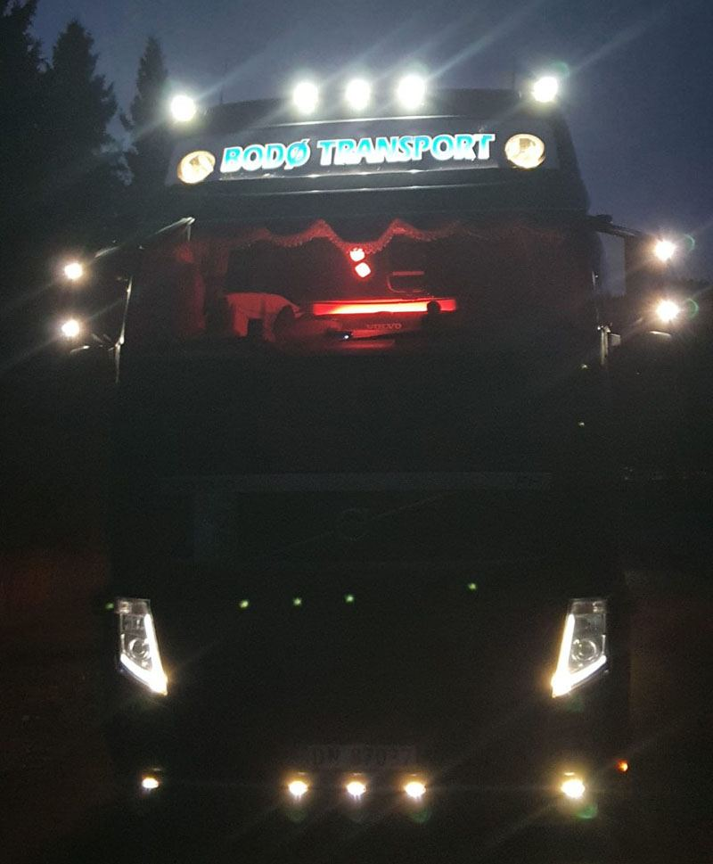
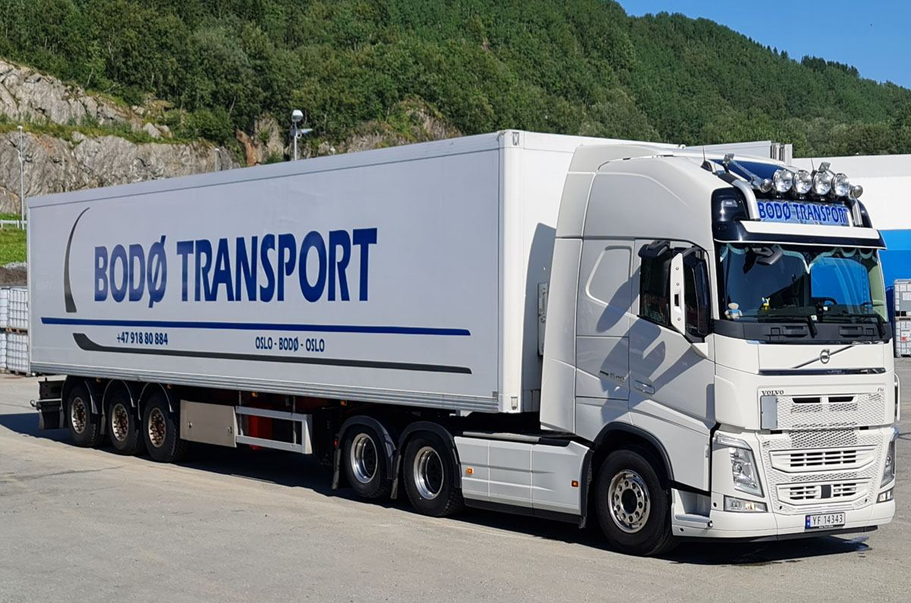

Langtransport
Langtransport
Stykkgodstransport mellom Oslo og Bodø Langtransport Galleri Kontakt oss Toggle Menu Stykkgodstransport mellom Oslo og Bodø Den optimale transportløsningen for din bedrift! Som kunde kan du være trygg på at varene dine kommer frem på en sikker og økonomisk måte. Vi henter godset hos avsender og etterstreber direkte frakt til mottaker i samlast med øvrig gods fra andre kunder. Dette sikrer god transportøkonomi og ikke minst lav risiko for skader
Stykkgods betrakter vi som frakter opp til 2500 kg, eller inntil 2 paller. Dette kan være alt fra mindre pakker, til større kolli. Godset kan være sekker, esker, paller og alt fra mindre pakker til større kolli. Sendingene samlastes i vårt rutenettverk.
Gods utover denne størrelsen, kalles partilast. Vi frakter også dette fra dør til dør på samme måte. Her har vi ingen begrensninger i størrelse. I tillegg etterstreber vi også her direkte frakt fra A til B.
Fordelene ved å minimere terminalbruk og kjøre direkte transport i samlast er åpenbare. Du sikres en pris som kun er for din sending, i fellesskap med våre andre kunder. Du sikres unødig omlast, noe som minimerer risikoen for så vel skader som unødige forsinkelser. Innenfor vår lokale distribusjonsnett har vi ikke faste dager på henting/levering, men dette utføres på daglig basis. Vi har også sikret kapasiteten hos oss med flere daglige avganger på «populære» distanser.



Kort fortalt: hva trenger du?
Beskriv saken, så svarer vi med hva det krever og hva det koster.